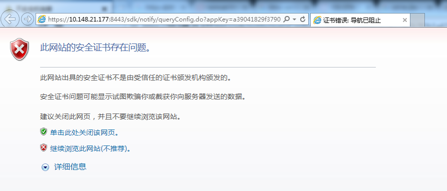
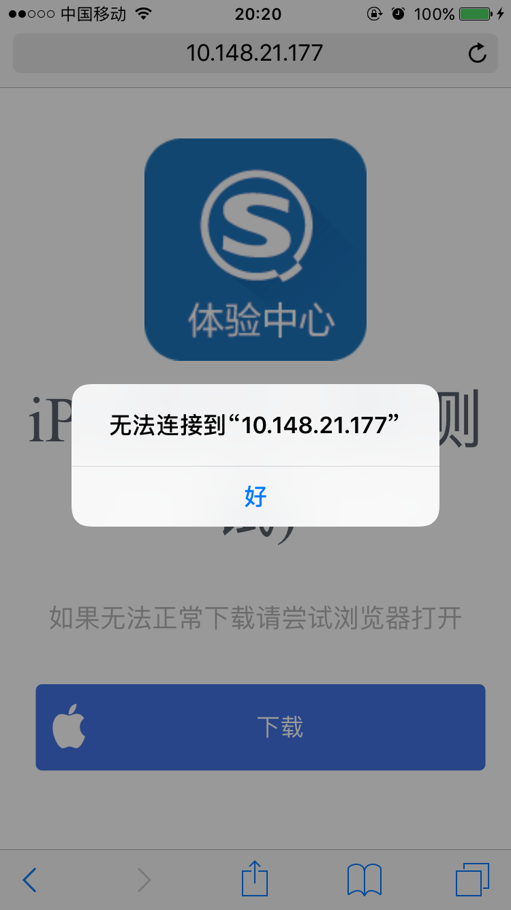
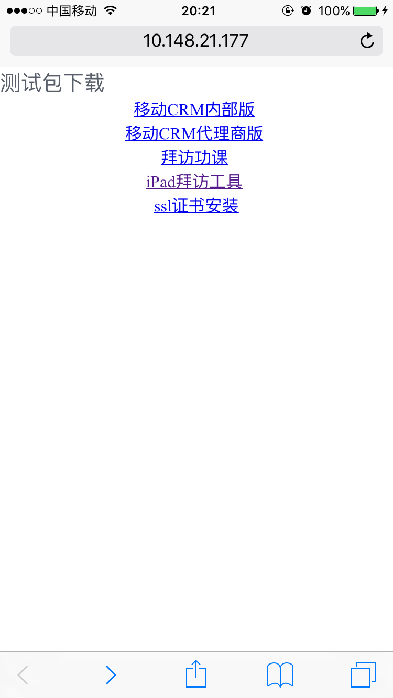
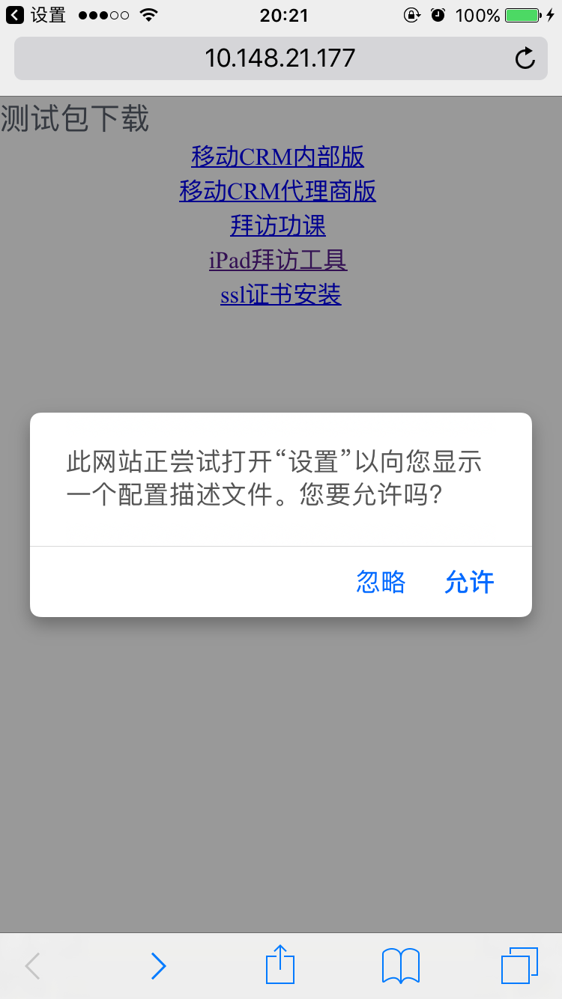
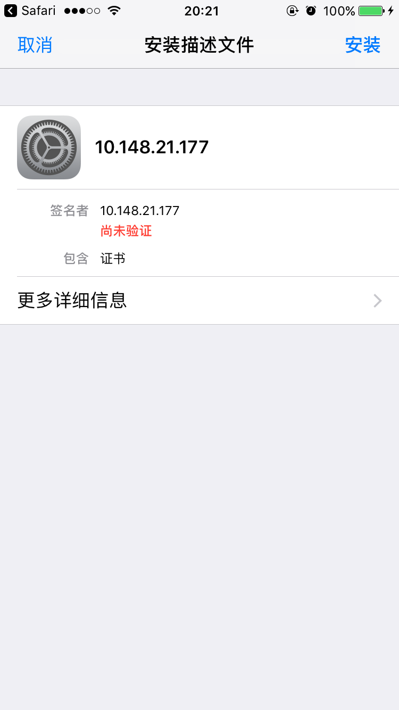
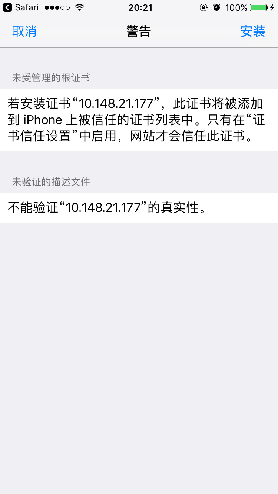
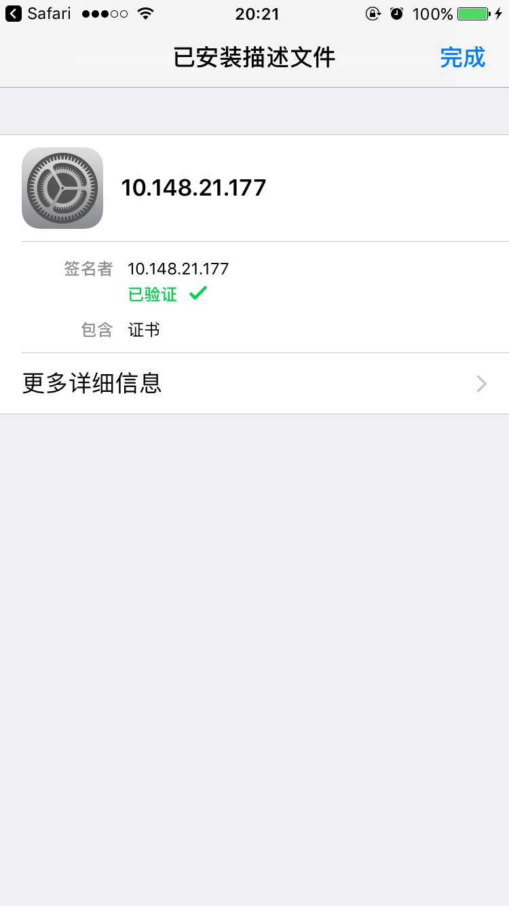
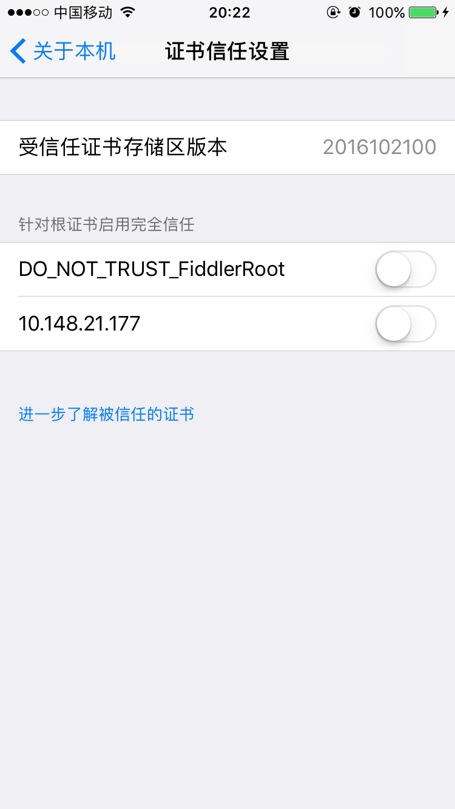
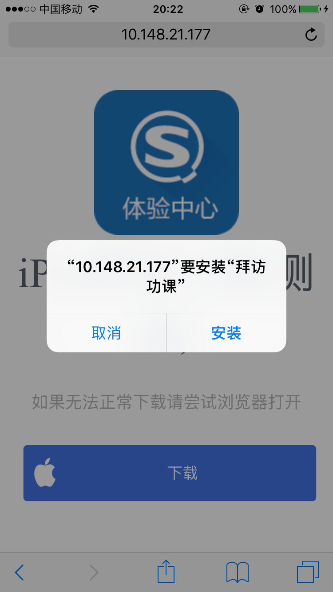

HTTPS 证书的一些事儿
在 iOS 的企业应用下载时，一般是在下载中间页通过 itms-services 协议请求一个 plist 地址， plist 中包含了真实 ipa 的下载地址，完成应用的下载和安装。
HTTPS 证书的申请需要一定成本，特别是在开发和测试阶段。此前，我们一般是将 plist 放到 github 这类的仓库中，从而得到一个 https 地址， 比如：
https://git.sogou-inc.com/bizios/dist/blob/master/visittool/visittool.plist。 |
这种方式得到的 https 地址是静态，在移动开发平台的应用发布中，这种静态的链接满足不了需求，原因有二：
- 当发布的新版出现问题、需要回滚时，静态链接只能重新替换线上的安装包，无法做到一键回滚；
- 应用检查版本、进行更新时，静态链接无法实现某一部分用户看到新版本更新、另一部分看到的依然是老版本，无法实现灰度发布；
因此，只能使用类似 /checkUpdate.do?appKey=xxx 这种动态接口的形式。而这种方式在开发和测试阶段就无法再通过 github 获取 https 链接了。
除了向公开的可信任机构申请证书外，我们也可以自行签发证书。虽然安全性不高，但胜在成本低，能够满足开发和测试的需要。
关于 HTTPS 等背景知识就不过多做介绍了，下面介绍具体的操作步骤。
HTTPS 证书生成
创建密钥
ssh-keygen -f bizmobile.key |
创建签署申请
openssl req -new -key bizmobile.key -out bizmobile.csr |
执行这条命令后，系统会提示输入各项信息，由于这是自签名的证书，除了 Common Name (e.g. server FQDN or YOUR name) []: FQDN（ fully qualified domain name）必须是服务器域名或 IP 外，其他都不重要，可以随意填写或一路回车。
这里我们填写自己的服务器 IP ： 10.148.21.177
创建 SSL 证书
openssl x509 -req -days 365 -in bizmobile.csr -signkey bizmobile.key -out bizmobile.crt |
生成 p12 证书
由于我们使用 Resin 作为 Web 容器发布 HTTPS 服务，而 Resin 使用的是 jks 证书，因此需要做一个从 crt 证书到 jks 证书的转换。首先，需要转成 p12 证书：
openssl pkcs12 -export -name bizmobile -in bizmobile.crt -inkey bizmobile.key -out bizmobile.p12 |
生成 jks 证书
keytool 是 JDK 中的命令，需要提前安装：
keytool -importkeystore -destkeystore bizmobile.jks -srckeystore bizmobile.p12 -srcstoretype pkcs12 -alias bizmobile |
至此，完成了证书的制作。
Resin 配置
打开 resin.properties 文件，默认 https 端口是被注释掉了，请打开：
app.http : 8001 |
找到 jsse 开头的配置项，将注释打开，并配置成刚刚生成的证书路径，注意密码需要和生成证书时的一致：
jsse_keystore_type : jks |
保存配置文件，重启 Resin，通过浏览器使用 https 协议和 8443 端口访问，不出意外的话会有一个证书不被信任的安全性警告，这是因为使用的证书是我们自行签发的，没有得到根证书的验证。

可以点击继续浏览，不影响使用。
iOS 设备配置
此时，如果我们将 iOS 应用下载的中间页的下载链接替换成我们的 https 服务的话，
var plistUrl = 'https://10.148.21.177:8443/sdk/deploy/release/downloadPlist.do?appKey=96de1998f0ee8215692227901dfa2551'; |
不出意外的话依然会有错误：

这是由于我们的 iOS 设备还没有安装证书。
我们把前面生成的 crt 证书也放到了下载中间页中：

点击链接进行安装：




证书安装完成后，还有最后一步，进入 设置 -> 通用 -> 关于本机 -> 证书信任设置 中，将刚刚安装的证书的信任开关打开：

之后，再点击下载页的下载链接，就可以正常下载和安装了：
